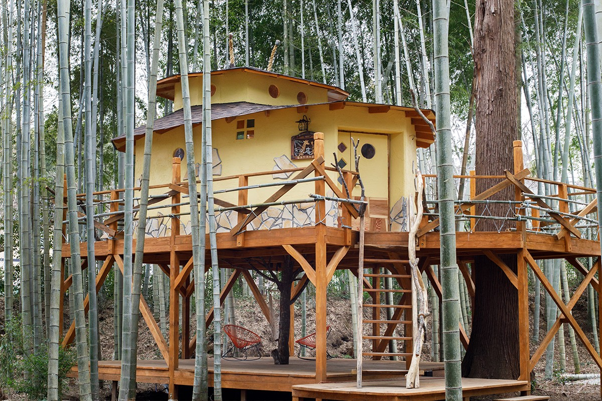
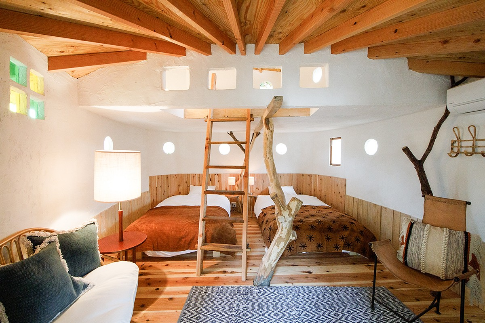
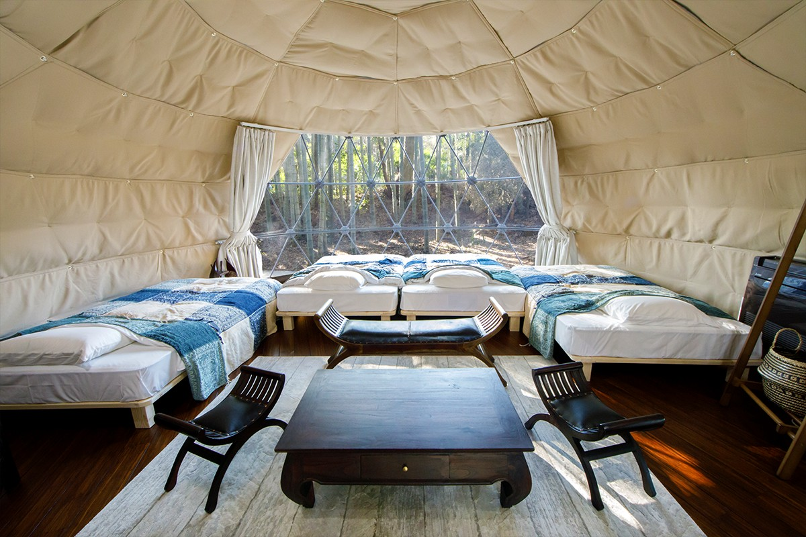
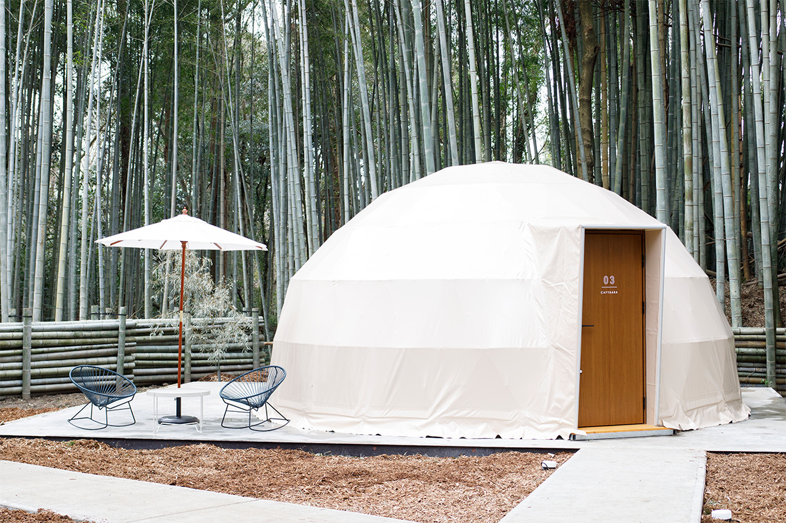
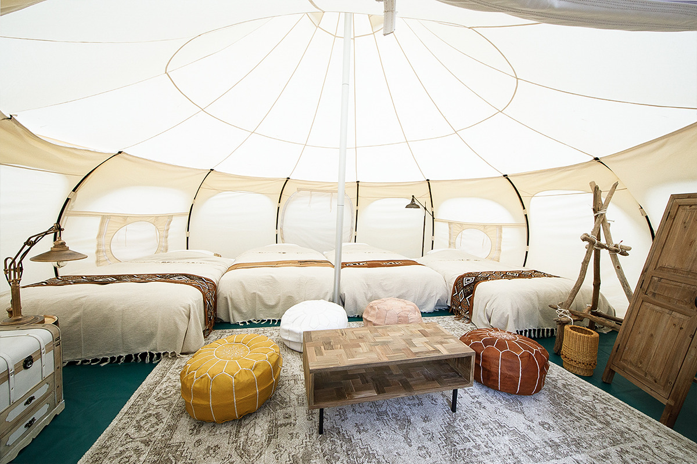
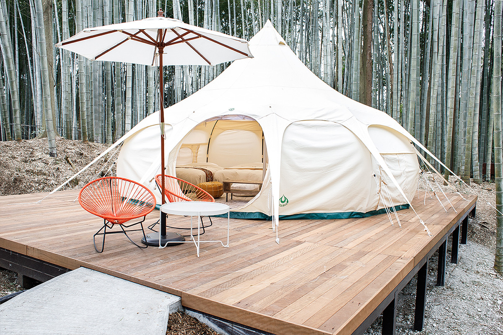
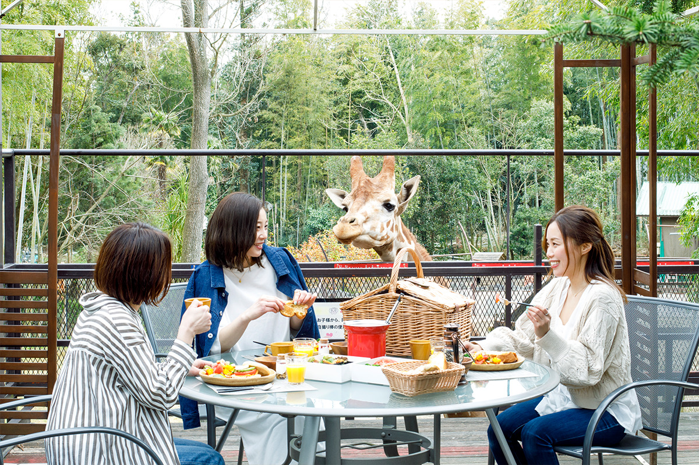
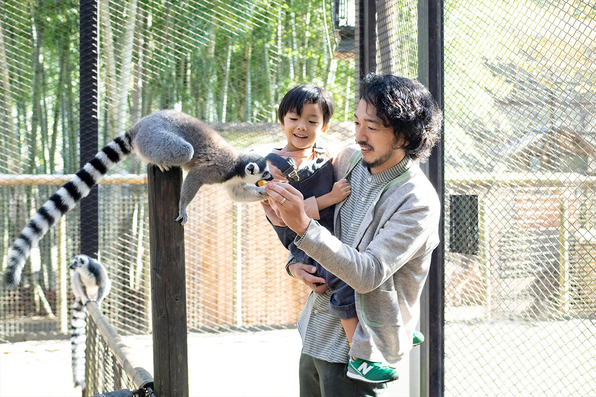
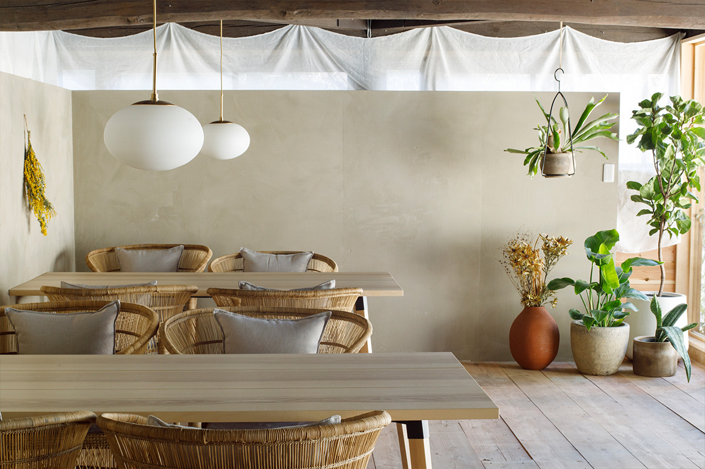
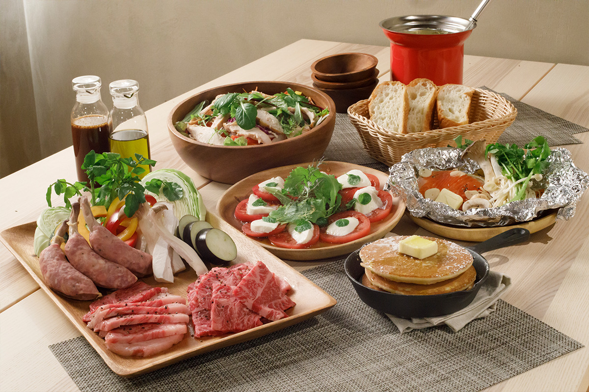

Префектура Тиба · Итихара · где остановиться
The Bamboo Forest: глэмпинг в бамбуковой роще по соседству с жирафами и капибарами

Глэмпинг избавляет от палаток, спальников и котелков, но оставляет главное: ночь на природе. В Итихаре к этому добавили зоопарк, и соседями гостей становятся жирафы, капибары и альпаки.
Место
Бамбуковая роща при зоопарке
Город Итихара в префектуре Тиба находится примерно в часе езды на машине от центра Токио. Здесь работает зоопарк Sayuri World, а в бамбуковой роще на его территории устроен глэмпинг The Bamboo Forest. Его задумали как «анимал-глэмпинг»: ночёвка на природе здесь соединена с зоопарком.
Многие знают Итихару по другому зоопарку той же группы, «Итихара Дзо-но куни», где живёт больше всего слонов в Японии. Sayuri World приходится ему родственным зоопарком. Здесь 30 видов животных, от жирафов до капибар, и с ними можно общаться напрямую.
Природа и звери тут совсем рядом: прямо возле домиков для гостей стоит вольер с капибарами.
Номера
Три вида жилья
На участке в 2000 квадратных метров стоят шесть номеров трёх видов: один домик на дереве, три купольных шатра и два шатра Lotus Belle.
Домик на дереве «Кирин-ан», то есть «Жирафья хижина», построил мастер-скульптор из префектуры Аомори, на счету которого около двадцати таких домиков. Силуэт домика напоминает жирафа. Снаружи он похож на тайное убежище в бамбуковой чаще, а внутри полон выдумки, и интересно в нём и детям, и взрослым.

Домик двухэтажный: внизу две полуторные кровати, на антресоли ещё одна односпальная. На каждом этаже своя терраса с видом на бамбуковую рощу. За дизайн The Bamboo Forest получил премию Good Design Award в 2020 году и серебро итальянской премии A' Design Award в 2021 году.
Купольные шатры сделаны специально для глэмпинга. Изнутри их обшили утеплённой подкладкой, поставили кондиционеры, а зимой стелют тёплые ковры, так что жить в них удобно и летом, и зимой.
Шатрам дали имена животных: ELEPHANT, CAPYBARA и RABBIT. Кровати, их размер и мебель в каждом свои. Общее у всех одно: целая стена занята окном, и в шатре много света и простора. В двух шатрах по четыре полуторные кровати, в третьем две кровати размера «квин». Такой номер подойдёт и семье с детьми, и паре, которая хочет провести день с комфортом.


Шатры Lotus Belle напоминают юрту кочевников и пользуются любовью поклонников глэмпинга. Крыша у них сделана отдельной частью и похожа на луковку, поэтому снаружи шатёр кажется маленьким и милым. Внутри же неожиданно просторно. В одном шатре четыре полуторные кровати, в другом две кровати «квин».


Животные
Завтрак с жирафами
Есть у глэмпинга при зоопарке и особое предложение: завтрак за дополнительную плату на террасе прямо у вольера жирафов. Огромные звери с добрыми мордами с любопытством заглядывают к гостям или неспешно бродят рядом, пока те завтракают. В 2021 году завтрак с жирафами предлагали с апреля до конца октября и только по предварительной записи.

После завтрака гости могут обойти зоопарк до открытия, когда посетителей ещё нет, и покормить лемуров, альпак и других животных. Утром звери особенно голодны и собираются вокруг тех, у кого есть корм, так что кормить их приходится совсем вблизи.

При глэмпинге работает кафе-бар. Днём здесь обедают и пьют кофе, а в дождь и в холод сюда переносят ужин.

На ужин подают барбекю под открытым небом: закуски, салат, японскую говядину вагю и колбаски, порции щедрые. Утром гостям готовят завтрак в западном стиле.

The Bamboo Forest хорош для тех, кто хочет провести ночь в лесу без лишних хлопот и проснуться совсем рядом с животными.
The Bamboo Forest
- Адрес
- префектура Тиба, Итихара, Ямаогава, 790
- Телефон
- +81 436-63-6277 (приём звонков с 9:00 до 18:00)
- Номера
- домик на дереве (1), купольные шатры (3), шатры Lotus Belle (2)
- Заезд / выезд
- 15:00 / 11:00
- Цены / Вход
- номер от 36 300 иен за ночь, проживание с ужином и завтраком от 11 000 иен; завтрак с жирафами +2000 иен для взрослых, +1000 иен для детей (всё с налогом, 2021 год)
- Как добраться
- на машине около 5 минут от развязки Итихара-Цурумай; от автовокзала Итихара-Цурумай около 4 минут на такси (есть бесплатный трансфер по предварительной записи)
- Сайт
- bamboo-forest.jp